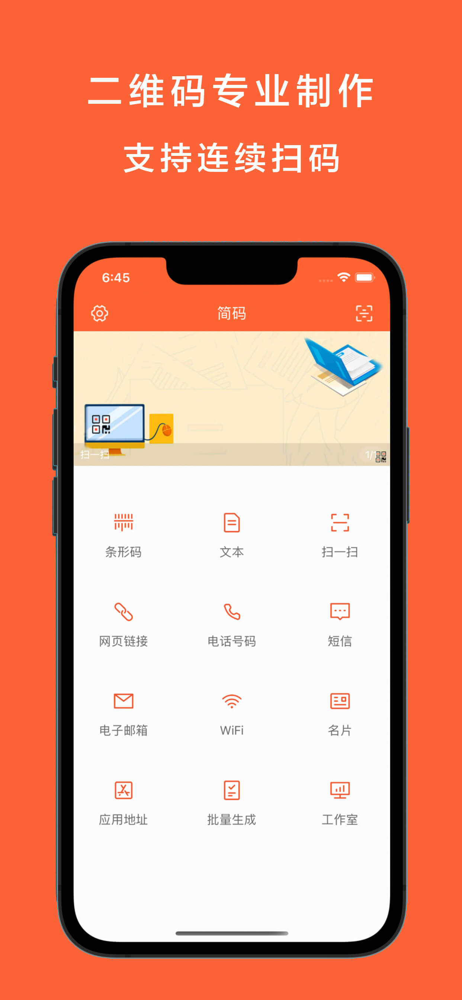
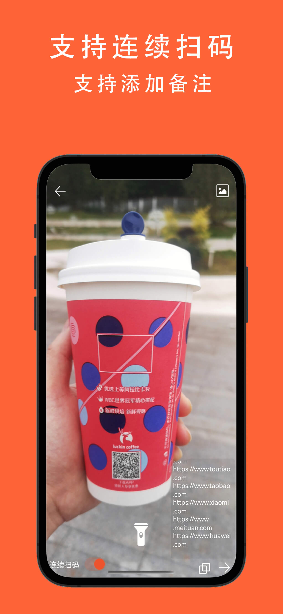
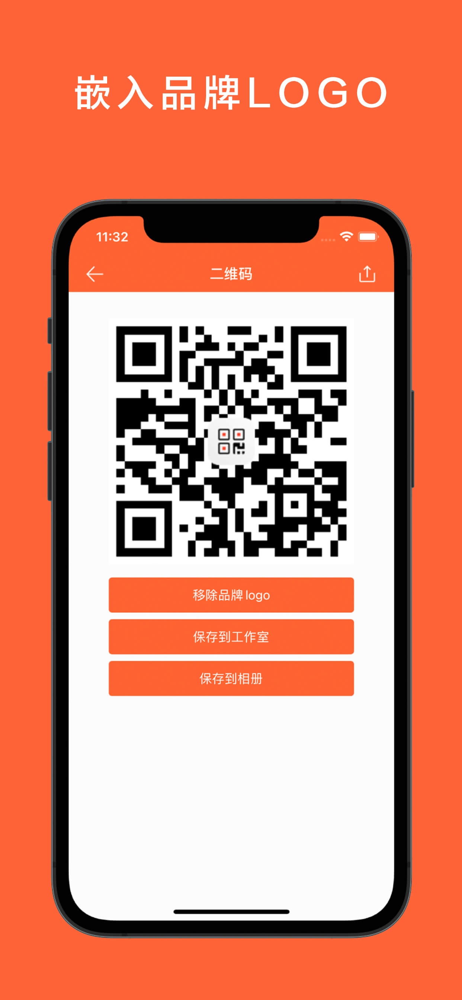
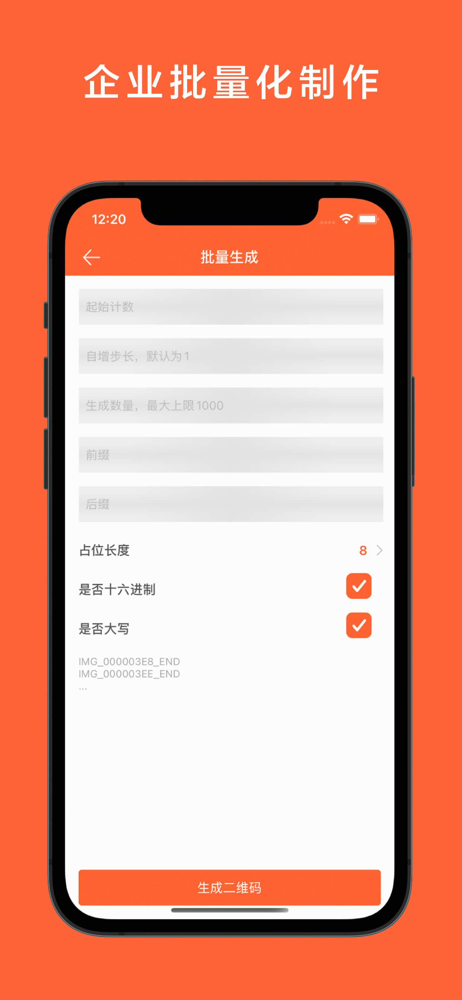
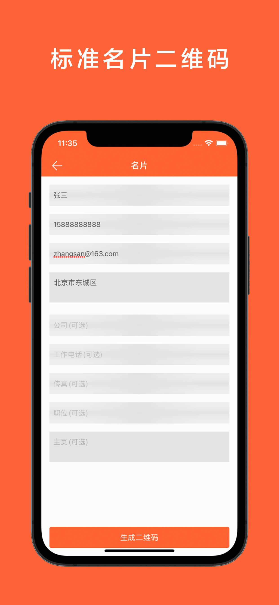
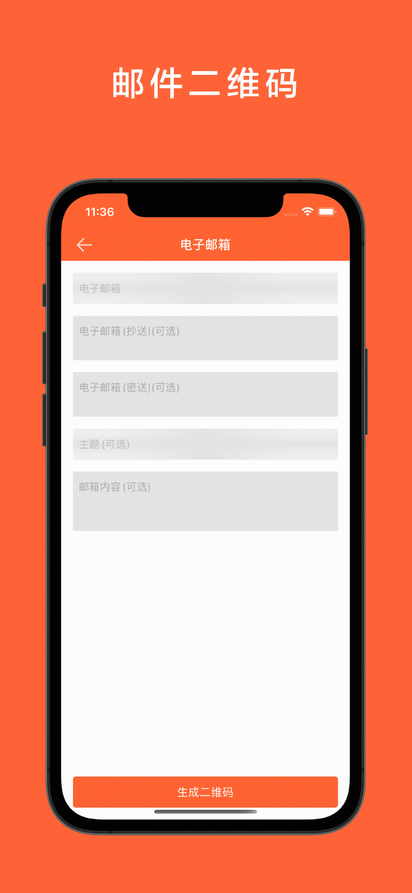
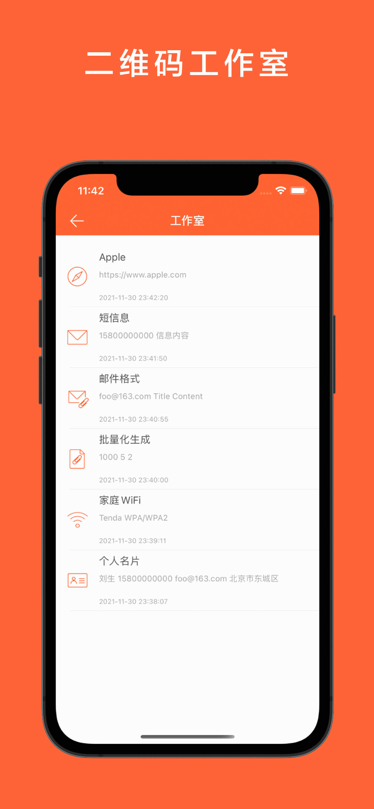

产品介绍
支持连续扫码的二维码、工业条形码制作扫码识别软件，支持识别和生成了个所有市场主流的工业条形码和二维码.
iOS下载
Android下载

二维码专业制作
支持连续扫码的二维码、工业条形码制作扫码识别软件，支持识别和生成了个所有市场主流的工业条形码和二维码.

连续扫码
【连续扫码】支持扫一扫界面持续扫码记录，一键拷贝或备注

嵌入品牌LOGO
【嵌入品牌LOGO】支持在生成的二维码中嵌入品牌LOGO图标

批量生成二维码
【批量生成二维码】我们支持批量快速生成二维码，为企业级工业产品制作二维码保驾护航，支持前缀、后缀等参数的插入，文件名自动对应内容，生成1000个二维码在不到一分钟时间内即可完成，可通过分享的方式批量压缩后发送到桌面

名片二维码
【名片二维码】专业名片二维码格式生成，我们采用国际主流的名片格式生成二维码，并支持扫码解析其他名片格式

电子邮件
【电子邮件】为电子邮箱及抄送/密送等信息生成对应的二维码，其他人扫码确认可以自动进入发送邮件界面

工作室
【工作室】我们可以将二维码等相关信息保存到工作室，可以随时查看和进行二次编辑
更多功能
【WiFi】你现在可以为自己的家庭路由器WiFi信息生成对应的二维码，只需要扫描二维码即可自动连接WiFi无线网络
【电话号码】为手机号码生成对应的二维码，其他人扫码确认可以自动进入拨号界面
...
我们的愿景
坚持简约的设计理念，所见即所得，让所有人都能轻松使用
努力用心, 为您服务!您的每一个反馈与善意的指点, 都是我们进步的动力~